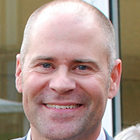

CfA Team
Board of Directors
-
Jennifer Pahlka

Jennifer Pahlka is the founder of Code for America. She is known for her TED talk, Coding a Better Government, and is an Ashoka fellow. The Oxford Internet Institute awarded her the 2012 Internet and Society Award, Government Technology named her one of 2011’s Doers, Dreamers and Drivers in Public Sector Innovation and the Huffington Post named her the top Game Changer in Business and Technology the same year. She spent eight years at CMP Media where she ran the Game Developers Conference, Game Developer magazine, Gamasutra.com and the Independent Games Festival. Previously, she ran the Web 2.0 and Gov 2.0 events for TechWeb, in conjunction with O’Reilly Media, and co-chaired the successful Web 2.0 Expo. Jennifer’s early career was spent in the non-profit sector. She is a graduate of Yale University and lives in Oakland, Calif. with her daughter and eight chickens.
-
John Lilly

John Lilly is a partner at Greylock Partners with a focus on consumer Internet and enterprise software. Prior to Greylock, John was CEO of Mozilla, the organization behind Firefox, an open source Web browser used by more than 400 million people. John also co-founded Reactivity, an enterprise security infrastructure company acquired by Cisco in 2007, where he served as founding CEO and later CTO. John is currently on the Board of Directors of the Mozilla Corporation and the Participatory Culture Foundation, and has previously served on the boards of directors of TripIt (acquired by Concur in 2011), CenterRun (acquired by Sun Microsystems in 2003), and Reactivity (acquired by Cisco Systems in 2007). He is a co-inventor on 7 United States patents.
-
Stacy Donohue
Stacy Donohue is a Director of Investments at the Omidyar Network. She brings broad technology, strategy, and financial expertise to Omidyar Network’s Media, Markets & Transparency initiative, managing investments in Government Transparency across the United States and Latin America. In this role, Stacy works to encourage accountability and effectiveness in government by increasing people’s access to credible information about government activities and money in politics. Prior to joining Omidyar Network, Stacy spent nine years at Hewlett-Packard in senior roles spanning strategy, corporate development, and merger and acquisition transactions. Stacy received an MBA with distinction from Harvard Business School, an MA in art history from the University of California, Berkeley, and a BA from Yale University, where she graduated summa cum laude and was elected to Phi Beta Kappa.
-
Eric Ries
Eric Ries is an entrepreneur and author of the New York Times bestseller, The Lean Startup: How Today’s Entrepreneurs Use Continuous Innovation to Create Radically Successful Business, published by Crown Business. He serves on the advisory board of a number of technology startups, and has consulted to new and established companies as well as venture capital firms. In 2010, he was named entrepreneur-in-residence at Harvard Business School and is currently an IDEO Fellow. Previously he co-founded and served as CTO of IMVU, his third startup. In 2007, BusinessWeek named him one of the Best Young Entrepreneurs of Tech. In 2009, he was honored with a TechFellow award in the category of Engineering Leadership.The Lean Startup methodology has been written about in The New York Times, The Wall Street Journal, Harvard Business Review,Inc. (where he appeared on the cover), Wired, Fast Company, and countless blogs. He lives in San Francisco.
-
Nigel Jacob
Nigel Jacob is the Co-Chair of the Mayor’s Office of New Urban Mechanics for the City of Boston. With an extensive background in collaborative, citizen-facing technology projects, Nigel Jacob co-founded the Office of New Urban Mechanics – a civic innovation incubator within Boston’s City Hall. Nigel also serves as Mayor Menino’s advisor on emerging technologies. In both of these roles, Nigel works to develop new models of innovation for cities in the 21st century. Prior to joining the City of Boston in 2006, Nigel worked for and launched a series of technology start-ups in the Boston area. Nigel is also a fellow at the Center for the Advancement Public Action at Bennington College. In recognition for their ground-breaking work in Boston, Nigel and Chris Osgood were both named Public Officials of the year in 2011 by Governing Magazine.
-
Tim O'Reilly

Tim O’Reilly is the founder and CEO of O’Reilly Media Inc. Considered by many to be the best computer book publisher in the world, O’Reilly Media also hosts conferences on technology topics, including the O’Reilly Open Source Convention, Strata: The Business of Data, the Velocity Conference on Web Performance and Operations, and many others. Tim’s blog, the O’Reilly Radar “watches the alpha geeks” to determine emerging technology trends, and serves as a platform for advocacy about issues of importance to the technical community. Tim is also a partner at O’Reilly AlphaTech Ventures, O’Reilly’s early stage venture firm, and is on the board of Safari Books Online, PeerJ, Code for America, and Maker Media, which was recently spun out from O’Reilly Media. Maker Media’s Maker Faire has been compared to the West Coast Computer Faire, which launched the personal computer revolution.
-
Shona Brown
Shona Brown joined the executive team of Google in 2003 and was responsible for building both the People Operations and Business Operations groups. In 2011, she took on the role leading all of Google’s technology for social impact efforts and in January of 2013 she became a Googler Emeritus and moved into an advisory role with the company. Prior to joining Google she was a partner at McKinsey & Company, a management consulting company, where her focus was working with consumer technology companies on growth, innovation, and transformation. Dr. Brown is the author of Competing on the Edge: Strategy as Structured Chaos, which introduced a new strategic model for competing in volatile markets. She is a director of the following non-profit organizations: The Bridgespan Group, The Nature Conservancy, The Exploratorium, and San Francisco Jazz Organization. She also serves on the board of PepsiCo. Dr. Brown has a bachelor’s degree in computer systems engineering from Carleton University in Canada, an M.A. in economics and philosophy from Oxford University (which she attended as a Rhodes scholar), and a Ph.D. and postdoctoral degree from Stanford University’s Department of Industrial Engineering and Engineering Management.
-
Damian Thorman
Emeritus
Damian Thorman is the Knight Foundation’s National Program director where he helps supports innovative ideas and leadership with the potential to drive transformative change nationally and in Knight’s resident communities. He helps develop new grant opportunities at a national level that target systemic change within the framework of informed, engaged communities. Thorman most recently served as assistant prosecuting attorney of the Jackson County Prosecutor’s Office in Kansas City, Mo. He founded and ran the Thorman Strategy Group, a consulting practice that assisted foundations, nonprofits and for-profit organizations from 2002 to 2005. He served as adjunct political science professor at Avila College in Kansas City, Mo. Thorman was the director of public affairs and policy at the Ewing Kauffman Foundation in Kansas City from 1994 to 2002. In Washington, D.C., he served as assistant director at the American Academy of Pediatrics, professional staff member of the House Education and Labor Committee, and congressional aide to then-U.S. Rep. Bill Richardson. He also served a brief stint as a reporter for the National Catholic Reporter in Los Angeles. He has a law degree from the University of Missouri-Kansas City and a master’s in business administration from Rockhurst University.
-
Andrew Greenhill

Emeritus
Andrew Greenhill is the Mayor’s Chief of Staff for the City of Tucson. He has worked extensively on wide-ranging issues facing Tucson and Southern Arizona such as water, transportation, environmental sustainability, urban planning, economic development and local government reform. Andrew’s strong interest in Government 2.0‚ the use of technology to improve government and serve citizens, has led to the development of a number of technology initiatives both inside and outside city government. In addition to serving on the Board of Directors for Code for America, Andrew recently co-founded OpenTucson, a local non-profit where civic-minded web developers work closely with community leaders to develop applications and other technological solutions and improve Tucson’s quality of life.
-
Andrew McLaughlin
Emeritus
Andrew McLaughlin is chairman of the board of Access, a member of the boards of directors of Chartbeat, the Sunlight Foundation, and Public Knowledge, and a Future Tense Fellow at the New America Foundation. From 2009-2011, Andrew McLaughlin was a member of President Obama‘s senior White House staff, serving as Deputy Chief Technology Officer of the United States. In that role, Andrew was responsible for advising the President on Internet, technology, and innovation policy, including open government, cybersecurity, online privacy and free speech, spectrum policy, federal R&D priorities, entrepreneurship, and the creation of open technology standards and platforms for health care, energy efficiency, and education. In 2008-2009, he served on the Obama/Biden presidential transition team, as a member of the Technology, Innovation and Government Reform cluster. In previous roles he has been the EVP of Tumblr, Executive Director of Civic Commons and Director of Global Public Policy at Google.
-
Leonard Lin
Emeritus
Leonard Lin is a technologist specializing in the social web and a happy dilettante in hardware hacking, data visualization, participatory politics and other such geekery. He co-founded Upcoming.org (acquired by Yahoo! in 2005), and subsequently ran Yahoo!’s Hack Day program. Most recently, he worked on web technology and social software for the Obama campaign. Prolific and highly parallel, he’s written code for Lawrence Lessig, WordPress, Metafilter, Downhill Battle, and deployed mobile location and sensor network applications for the Web 2.0 Expo and Where 2.0 conferences. Leonard helped co-found Code for America along with Jennifer Pahlka, laying the groundwork for the program, and continues to serve as a technical advisor.
Staff
-
Bob Sofman
Co-Executive Director
Bob Sofman has had a diverse career – from counseling adolescents early in his career to holding executive positions in both large companies and startups. During the 10 years Bob spent at ATT, he held a variety of positions, including running ATT’s International Inbound business. From ATT, Bob helped launch PacBell’s Long Distance business and from there joined his first startup AVIRNEX in a CMO role. After a successful acquisition, Bob joined PointCast where he helped direct the sale of the company and then spent 7 years as an SVP at Charles Schwab where he launched Schwab’s wireless business and led the eBusiness Group. He holds a BS in Psychology and two Masters Degrees (Counseling and Computer Science), as well as being certified in change and culture management. Bob is a single father of a 6 year-old son, lives in San Francisco, and sits on several non-profit and advisory boards.
-
Abhi Nemani

Co-Executive Director
Abhi Nemani is a writer, speaker, organizer, and technologist. For the past four years, he has helped build the national non-profit, Code for America, a technology organization dedicated to reinventing government for the 21st century. Abhi has led CfA’s strategic development, including the development of multiple new initiatives designed for scaling the organization’s impact, including the launch of a first-of-its-kind civic startup accelerator and a collaborative network for hundreds of government innovators. Currently serving as Co-Executive Director, Abhi leads growth and product strategy. Prior to CfA, Abhi managed research teams at the Rose Institute of State of Local Government, and with Google, he pioneered an innovative strategy to leverage social media for consumer engagement. He graduated magna cum laude from Claremont McKenna College with a honors degree in Philosophy, Politics, and Economics (PPE). Abhi’s work has been featured in the New York Times, Government Technology, and Forbes, and he has been featured as a speaker at SxSW, the World Bank, and various universities and conferences around the world.
-
Meghan Reilly
CFO & COO
Meghan Reilly joined Code for America in August, 2010. After graduating from the University of Colorado she moved out West to join The Ritz-Carlton, San Francisco team. She participated in their rigorous training program and spent four years learning the hospitality industry. She then moved into the technology arena, working on major technology events such as COMDEX, Interop, Web 2.0 Summit, Web 2.0 Expo and more. Her roles on these events evolved; when she left the corporate world in August she was Associate GM & Operations Director on the Web 2.0 and Gov 2.0 events, co-produced by UBM TechWeb and O’Reilly Media.
=======
Who We Are
Code for America was founded in 2009 by Jennifer Pahlka with the intent to reinvigorate local government using the people and power of the web. We believe that government innovators, tech-savvy citizens, and civic tech startups, can help us build governments that are by the people, for the people, that work in the 21st Century.
Our team is made up of web geeks, city experts, and technology industry leaders, who are dedicated to improving their communities. We’re looking for creative, collaborative people to help.
Board of Directors
-
Jennifer Pahlka
Jennifer Pahlka is the founder of Code for America. She is known for her TED talk, Coding a Better Government, and is an Ashoka fellow. The Oxford Internet Institute awarded her the 2012 Internet and Society Award, Government Technology named her one of 2011’s Doers, Dreamers and Drivers in Public…
-
John Lilly
John Lilly is a partner at Greylock Partners with a focus on consumer Internet and enterprise software. Prior to Greylock, John was CEO of Mozilla, the organization behind Firefox, an open source Web browser used by more than 400 million people. John also co-founded Reactivity, an enterprise security…
-
Stacy Donohue
Stacy Donohue is a Director of Investments at the Omidyar Network. She brings broad technology, strategy, and financial expertise to Omidyar Network’s Media, Markets & Transparency initiative, managing investments in Government Transparency across the United States and Latin America. In this role,…
-
Eric Ries
Eric Ries is an entrepreneur and author of the New York Times bestseller, The Lean Startup: How Today’s Entrepreneurs Use Continuous Innovation to Create Radically Successful Business, published by Crown Business. He serves on the advisory board of a number of technology startups, and has consulted…
-
Nigel Jacob
Nigel Jacob is the Co-Chair of the Mayor’s Office of New Urban Mechanics for the City of Boston. With an extensive background in collaborative, citizen-facing technology projects, Nigel Jacob co-founded the Office of New Urban Mechanics – a civic innovation incubator within Boston’s City Hall.…
-
Tim O'Reilly
Tim O’Reilly is the founder and CEO of O’Reilly Media Inc. Considered by many to be the best computer book publisher in the world, O’Reilly Media also hosts conferences on technology topics, including the O’Reilly Open Source Convention, Strata: The Business of Data, the Velocity Conference on…
-
Shona Brown
Shona Brown joined the executive team of Google in 2003 and was responsible for building both the People Operations and Business Operations groups. In 2011, she took on the role leading all of Google’s technology for social impact efforts and in January of 2013 she became a Googler Emeritus and moved…
Board Emeritus
-
Damian Thorman
Damian Thorman is the Knight Foundation’s National Program director where he helps supports innovative ideas and leadership with the potential to drive transformative change nationally and in Knight’s resident communities. He helps develop new grant opportunities at a national level that target systemic…
-
Andrew Greenhill
Andrew Greenhill is the Mayor’s Chief of Staff for the City of Tucson. He has worked extensively on wide-ranging issues facing Tucson and Southern Arizona such as water, transportation, environmental sustainability, urban planning, economic development and local government reform. Andrew’s strong…
-
Andrew McLaughlin
Andrew McLaughlin is chairman of the board of Access, a member of the boards of directors of Chartbeat, the Sunlight Foundation, and Public Knowledge, and a Future Tense Fellow at the New America Foundation. From 2009-2011, Andrew McLaughlin was a member of President Obama‘s senior White House staff,…
-
Leonard Lin
Leonard Lin is a technologist specializing in the social web and a happy dilettante in hardware hacking, data visualization, participatory politics and other such geekery. He co-founded Upcoming.org (acquired by Yahoo! in 2005), and subsequently ran Yahoo!’s Hack Day program. Most recently, he worked…
Staff
-
Bob Sofman
Co-Executive Director
Bob Sofman (Co-Executive Director) has had a diverse career – from counseling adolescents early in his career to holding executive positions in both large companies and startups. During the 10 years Bob spent at ATT, he held a variety of positions, including running ATT’s International Inbound business.…
-
Abhi Nemani
Co-Executive Director
Abhi Nemani (Co-Executive Director) is a writer, speaker, organizer, and technologist. For the past four years, he has helped build the national non-profit, Code for America, a technology organization dedicated to reinventing government for the 21st century. Abhi has led CfA’s strategic development,…
-
Meghan Reilly
CFO & COO
Meghan Reilly (CFO & COO) joined Code for America in August, 2010. After graduating from the University of Colorado she moved out West to join The Ritz-Carlton, San Francisco team. She participated in their rigorous training program and spent four years learning the hospitality industry. She then moved…
-
Michal Migurski
CTO
Michal Migurski (CTO) joined Code For America in 2013. Previous to CfA, Michal spent nine years as a partner and technology director at celebrated San Francisco design studio Stamen where he architected the technical aspects of Stamen’s work, moving comfortably from active participation in Stamen’s…
-
Ron Bouganim

Program Director, Accelerator
Ron is a serial entrepreneur in the telecommunications and consumer Internet sectors, having co-founded or been a member of the senior management of startups including CCI (sold to British Telecom), Trymedia (sold to Macrovision), Razz and branchnext. Ron has a deep understanding of how...
-
Lauren Reid
Senior Public Affairs Manager
Lauren Reid (Senior Public Affairs Manager) is a ardent servant of democracy-in-action whether it be on strike lines or online. She hosts a solid background in non-profit communications and has worked on various local and national campaigns blending new and traditional mediums. Prior to joining Code…
-
Jack Madans

Government Partnerships Manager
Jack Madans (Government Partnerships Manager) Jack’s work with CfA’s government partners ranges broadly from innovation policy and open data efforts to change management and community organizing. He cut his teeth as a community organizer early on when he founded the pilot project, FoodCycle, while…
-
Michael Santus
Office Manager
Michael Santus (Office Manager) joined Code for America in December, 2011. Originally from Philadelphia, Penn. he moved west in 1995. After gaining extensive skills and experience in the financial planning industry, he spent the past 5+ years managing the operations of 4 showrooms of a local Bay Area classic and exotic car dealer...
-
Ashley Meyers
Development & Engagement Manager
Ashley Meyers (Development and Engagement Manager) comes to Code for America with a background in politics and government. She caught the campaign bug in Chicago on a U.S. Senate race, did a stint on the Hill, and has since worked in a variety of roles, most recently serving as the Finance Director on…
-
Lauren Dyson
Content Manager
Lauren Dyson (Content Manager) originally got involved with Code for America as a communications intern in 2010, and joined the team full-time in 2012. She brings a range of experience in the Gov 2.0 space, having previously served as a 2010 Google Policy Fellow working with the Internet Education Foundation…
-
Alex Tran
Program Manager, Fellowship
Alex Tran (Program Manager, Fellowship) is a city advocate working at the intersections of technology and public service. Most recently he developed digital literacy trainings for leading Bay Area nonprofits, philanthropies and social enterprises at ZeroDivide. An alumni of the Coro Fellowship in Public…
-
Hannah Young
Program Coordinator, Brigade
Hannah Young (Program Coordinator, Brigade) joined Code for America in December 2012. Before moving to San Francisco and getting bit by the startup bug, she worked in Wisconsin newsrooms, the U.S. House of Representatives, and on numerous political campaigns...
-
Hadley Dynak
Institutional Partnerships Manager
Hadley Dynak brings extensive experience in local government and non-profit operations to her work with Code for America. She began her career with the Chicago Department of Public Health, and for the 10+ years prior to joining CfA she worked as a consultant for numerous service and policy organizations…
-
Cyd Harrell
UX Evangelist
Cyd Harrell (UX Evangelist) is a highly versatile and collaborative user experience expert with 12+ years of success improving online and software products. As CfA’s UX evangelist she works with fellows and staff to ensure we’re creating inventive and cost-effective solutions to serve the needs of…
-
Catherine Bracy

Director of Community Organizing
Catherine Bracy (Director of Community Organizing) Until November 2012, she was a product manager and director of the Obama campaign’s technology field office in San Francisco, the first of its kind in American political history. In that role she was responsible for organizing technologists to volunteer…
-
Dana Oshiro
Senior Marketing Manager
Dana Oshiro (Senior Marketing Manager) is a writer and marketing strategist with a love of tech and an interest in how new innovations affect our societies and lives. Prior to her position at CfA she worked in tech journalism, publishing, public affairs, environmental health and anti-poverty advocacy.…
-
Dharmishta Rood

Accelerator Program Manager
Dharmishta Rood (Accelerator Program Manager) believes that technology has the capacity to facilitate positive change in the world. Before joining Code for America, she was a Fellow in Psychology at Harvard, a Fellow at MITMedia Lab’s Center for Civic Media, wrote cases, industry reports and researched…
-
Matt Boitano

Development Assistant
Matt Boitano (Development Assistant) is a Bay Area native with a passion for civic engagement in tech and making government run more efficiently. Previously, he wore multiple hats at Oakland Local, providing support for its Development department while spearheading Outreach for its Hack the Hood program.…
-
Greg Johns
Finance Manager
Greg Johns (Finance Manager) has worked in a wide range of industries over the course of his career. He began his career in the New York City area where he worked at an one of the first companies to offer online brokerage services and extended his career into investment research working at Smith Barney,…
-
Erica Kwan
Senior Engineer
Erica Kwan (Senior Engineer) joined Code For America in 2013. Before CfA, Erica was an early engineer at Square, where she helped build out Square’s original core infrastructure and several internal applications. At CfA, Erica sustains and maintains applications created by fellows and develops tools…
-
Luke Norris

Director of Business Development
Luke Norris (Director of Business Development) has 12 years of experience in executing growth strategies for start-ups, nonprofits and Fortune 500 companies through leading direct sales and innovation teams, as well as structuring strategic partnerships. Luke is a Denver native who lives...
-
Nicole Neditch

Fellowship Director
Nicole Neditch (Fellowship Director) Prior to joining Code for America, Nicole worked for the City of Oakland in the Office of the City Administrator. There, she helped launch initiatives related to open government, online engagement, service design and public participation. She launched an Open Data…
-
Carolina Yu
Executive Assistant
Carolina joined Code for America in 2013. Originally from New York, she moved to the Bay Area after graduating from Boston University with a degree in psychology. Her diverse career spans from working in the non-profit sector to healthcare and retail operations. In her spare time, one will catch her volunteering...
>>>>>>> 7a492a0eaa30446475893f39b7df32f9f8c284f9
-
Greg Kerwin
Chief Revenue and Marketing Officer
Greg brings 20 years of business development, marketing and product management experience to Code for America. He was recently at UBM where he developed leading global events and digital media products, including collaborating with O’Reilly Media on the successful Web 2.0 and Gov 2.0 events and GTEC...
-
Lynn Fine
International Programs Manager
Lynn is a native San Franciscan who brings a wealth of international experience to CfA. After graduating Summa Cum Laude and Phi Beta Kappa from UCLA with a major in International Development, she went on to work in six countries in Latin America and then in India, resolving policy challenges and managing youth leadership projects...
To request a Code for America team member to speak at your event, fill out this form.